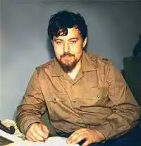

ЛЕОНІД КИСЕЛЬОВ —
ФЕНОМЕН ПОЕТИЧНИЙ ЧИ ПСИХОЛОГІЧНИЙ?
Я постою у края бездны И вдруг пойму сломясь в тоске, Что все на свете — только песня На украинском языке. Леонид Киселев Леонід Кисельов відомий українському читачеві на Заході з невеличкої добірки поезій та короткої біографії, надрукованої в журналі "Сучасність" (1973,7-8) і із статті Івана Кошелівця, вміщеної в цьому ж журналі в 1981 році. На Україні, до появи його перших українських віршів у 1968 році, ім'я Кисельова було знане тільки вузькому колу київських письменників старшої та молодшої генерації. Матеріали його життєпису дуже скупі. На основі коротеньких уведень до його віршів, що друкувалися в радянській періодиці, посилань на його особу в "Веселому романі", написаному його батьком у 1970 р., оповідання Юрія Щербака (Щербак Ю. Маленька футбольна команда. Оратарія для голосу і дитячого хору. Пам'яті молодого поета Леоніда Кисельова //Дніпро. —1972. —4. —С.69-83), присвяченого Кисельову (чи Льоні, як усі друзі його залюбки називали), та інших знахідок, хочемо накреслити бодай загальний силует цього, з багатьох поглядів, непересічного поета й непересічної людини. Народився він у Києві, в 1946 р., в родині російськомовного письменника Володимири Кисельова. Не сягнувши зеніту свого поетичного обдарування, помер у жовтні 1968 р. від недуги лейкемії, проживши всього двадцять два роки. В кінцевому підсумку наших шукань національного поетового кореня виявляється, що мати Леоніда — єврейка. Хоч у творчій біографії будь-якого письменника це не найосновніше питання, але у випадку Кисельова така деталь важлива і може кинути більше світла ра таємницю його поетичної трансформації — переходу від поезії російської до української. Учився на факультеті іноземних мов Київського університету на перекладацькому відділенні, спеціалізуючись, здається, в англійській мові. Не зважаючи на молодий вік, він вражав усіх не тільки начитаністю і широким знанням світової літератури, але й знанням точних наук — складних правил квантової механіки, кіберенетики; міг говорити про останній футбольний матч чи найновіший закордонний фільм. Захоплювався і знав стародавнє мистецтво, мозаїки й фрески Київської Софії, цікавився примітивним мистецтвом Никифора, любив поезію Шевченка, раннього Тичини, Драча, Вінграновського, Блока, Пастернака, Гумільова, Данте, Щекспіра, Рільке й Лорки, американський джаз, українську та парагвайську пісню. Ю.Щербак дає наступний мазок до зовнішньго і внутрішнього портрета Кисельова: "Обличчя нерухомо-смагляве, і це робило його схожим на молодого веніціанця.., проте темпераментом Льоня надто відрізнявся од італійців: був малорухомий і повільний (звичайно, не на футбольному полі), слова вимовляв тихо і наче мляво..." Коли Кисельов захворів — невідомо, але з поеми "Первая любовь!", написаної в 1962 р., коли йому було шістнадцять, можна догадуватися, що в тому часі він уже хворів на невиліковну недугу. Родина, друзі й лікарі-спеціалісти докладали всіх зусиль, а польські пілоти привозили ліки з Парижа, щоб рятувати, як тоді говорили, майбутнього Лермонтова, Пушкіна або й Шевченка. Почав писати російською мовою в 1959 р. Перша добірка його віршів побачила світ в 1963 р. в березневому числі московського журналу "Новый мир", головним редактором якого тоді був Олександр Твардовський, — з наступною приміткою: "Леонид Киселев, ученик 10 класса школы 37, г.Киев". "Первые стихи". Того ж року в квітневому числі журналу " Радуга" було надруковано два його короткі вірші. Вірш "Цари" в журналі "Новый мир", в якому десятикласник зневажав особу царя Петра I, ще й посилаючись на Шевченка, викликав у Києві сенсацію, а в Москві серед російської інтелігенції й академічних російських кіл — обурення й протести. Після того молодого поета перестали друкувати в російській радянській періодиці. П'ять років пізніше, 12 квітня 1968 р., за кілька місяців до смерті Кисельова, з'явилася в "Літературній Україні", з уведенням Івана Драча, добірка його українських поезій "Перші акорди"... Посмертно вийшли дві його книжки російської й української поезії — перша в 1970 році під назвою "Стихи. Вірші" (у видавництві "Молодь"), а друга, що є доповненням першої, в 1979 р., (також у видавництві "Молодь") під двомовною назвою — "Последняя песня. Остання пісня"... Загадковим для нас лишається питання, чому молодий поет, до того ж неукраїнського роду, вирішив переключитись з російської на українську мову. Загадково воно тим більше, що цей зворот стався в часі відвертої русифікації в Україні; в часі, коли українська мова й культура стали об'єктом принижування навіть своїми, українського роду, чиновниками — республіканськими урядовцями та академіками починаючи, а сільським учителем кінчаючи. Молодий поет виявив якщо не світоглядову заангажованість, то тяжіння серця і мислі до України вже в перших своїх російських віршах, надрукованих у 1963 році ("Цари", "Вірші про Тараса Шевченка", "Я забуду"), себто понад п'ять років перед своєю смертю. Формували його різні чинники. Писати українською мовою заохочував його батько, а в дитинстві він потрапив під вплив непокірного духу й майстерності Шевченкового вірша. Продовжував свою поетичну підготовку в середовищі прекрасних майстрів-шестидесятників: Драча, Вінграновського; знав творчість і долю популярного неконформіста Василя Симоненка, Ліни Костенко, Василя Голобородька й ряду інших, що впливали на нього своїми небуденними відкриттями в мові, образі, експресії, і що були для нього прикладом поетичної майстерності... У книжці Володимира Кисельова "Веселий роман" прототип Леоніда — молодий київський поет Леон на прохання друзів прочитати свої вірші, проказав "схвильовано і палко": ...все на свете — только песня На украинском языке. На запит "А чому українською мовою?" Леонід відповів: "А ось цього я не вмію пояснити. Я так відчуваю. Та якщо вважати поезію одним із засобів самовизначення, то доведеться примиритися з тим, що я саме так самовизначаюсь"...